<meta charset="utf-8">
<title>베를린에서 기차로 라이프치히 1박 — 나의 투자 그리고 행복한 여행</title>
<meta name="description" content="베를린에서 라이프치히까지 기차 소요 시간과 요금, 전승기념비 야경, 새벽 구시가지 도보 코스, 라이프치히에서 프라하 가는 방법 정리.">
<meta name="viewport" content="width=device-width, initial-scale=1">
<link rel="canonical" href="https://danielmoon82.github.io/moon/posts/leipzig-one-night-from-berlin-2026-09-16.html">
<link rel="preconnect" href="https://fonts.googleapis.com">
<link rel="preconnect" href="https://fonts.gstatic.com" crossorigin>
<link rel="stylesheet" href="https://fonts.googleapis.com/css2?family=Hahmlet:wght@400;600;800&family=IBM+Plex+Mono:wght@400;500&family=IBM+Plex+Sans+KR:wght@300;400;500;600&display=swap">

<style>
  :root{
    --paper:#F2EEE6;--surface:#FAF8F3;--surface-2:#E7E1D5;
    --ink:#191510;--ink-2:#4A4235;--ink-3:#7D7364;
    --line:#D6CEBF;--line-soft:#E4DDD0;--accent:#B06A15;--accent-bright:#C2761A;
    --up:#E5484D;--down:#3B82F6;
    --f-display:"Hahmlet",'Nanum Myeongjo',"Apple SD Gothic Neo",serif;
    --f-body:"IBM Plex Sans KR","Apple SD Gothic Neo","Malgun Gothic",sans-serif;
    --f-mono:"IBM Plex Mono","SFMono-Regular",Consolas,monospace;
    --pad:clamp(20px,5vw,64px);
  }
  @media (prefers-color-scheme:dark){
    :root:not([data-theme="light"]){
      --paper:#0B1120;--surface:#121A2C;--surface-2:#1A2439;
      --ink:#E9EEF7;--ink-2:#A9B5C9;--ink-3:#72809A;
      --line:#26314A;--line-soft:#1D2739;--accent:#E8A33D;--accent-bright:#F0B45C;
    }
  }
  *{box-sizing:border-box;}
  body{margin:0;background:var(--paper);color:var(--ink);font-family:var(--f-body);
    font-weight:300;font-size:1rem;line-height:1.75;-webkit-font-smoothing:antialiased;}
  a{color:inherit;}
  img{max-width:100%;height:auto;}
  .wrap{max-width:760px;margin:0 auto;padding-inline:var(--pad);}
  .nav{position:sticky;top:0;z-index:20;background:color-mix(in srgb,var(--paper) 88%,transparent);
    backdrop-filter:saturate(180%) blur(12px);border-bottom:1px solid var(--line);}
  .nav-in{display:flex;align-items:center;justify-content:space-between;height:58px;}
  .brand{font-family:var(--f-display);font-weight:600;font-size:1rem;letter-spacing:-.02em;text-decoration:none;}
  .back{font-family:var(--f-mono);font-size:.72rem;color:var(--ink-3);text-decoration:none;}
  .article{padding-block:clamp(40px,7vw,72px) clamp(56px,9vw,96px);}
  .eyebrow{font-family:var(--f-mono);font-size:.68rem;letter-spacing:.16em;text-transform:uppercase;
    color:var(--accent);margin:0 0 14px;}
  h1{font-family:var(--f-display);font-weight:800;font-size:clamp(1.6rem,4.4vw,2.3rem);
    line-height:1.3;letter-spacing:-.03em;margin:0 0 16px;}
  .byline{font-family:var(--f-mono);font-size:.72rem;color:var(--ink-3);
    padding-bottom:24px;border-bottom:1px solid var(--line);margin-bottom:32px;}
  h2{font-family:var(--f-display);font-weight:600;font-size:1.25rem;letter-spacing:-.02em;margin:42px 0 14px;}
  h3{font-family:var(--f-display);font-weight:600;font-size:1.05rem;letter-spacing:-.02em;
    margin:30px 0 10px;padding-top:14px;border-top:1px solid var(--line-soft);}
  h3 .code{font-family:var(--f-mono);font-size:.7rem;font-weight:400;color:var(--ink-3);margin-left:6px;}
  p{margin:0 0 18px;color:var(--ink-2);}
  ul.checks{margin:0 0 18px;padding-left:20px;color:var(--ink-2);}
  ul.checks li{margin-bottom:8px;font-size:.94rem;}
  table{width:100%;border-collapse:collapse;font-size:.88rem;margin-bottom:8px;}
  th{font-family:var(--f-mono);font-size:.66rem;letter-spacing:.06em;text-transform:uppercase;
    color:var(--ink-3);text-align:right;padding:8px 6px;border-bottom:1px solid var(--line);}
  th:first-child{text-align:left;}
  td{padding:10px 6px;border-bottom:1px solid var(--line-soft);color:var(--ink-2);}
  td.num{font-family:var(--f-mono);text-align:right;font-variant-numeric:tabular-nums;}
  td.up{color:var(--up);} td.down{color:var(--down);}
  .scroll{overflow-x:auto;}
  figure{margin:22px 0;}
  figure img{display:block;border-radius:3px;background:var(--surface-2);}
  figcaption{margin-top:8px;font-family:var(--f-mono);font-size:.68rem;color:var(--ink-3);text-align:center;}
  .note{margin-top:34px;padding:16px 18px;border-left:3px solid var(--accent);
    background:var(--surface);border-radius:0 3px 3px 0;}
  .note p{margin:0;font-size:.85rem;color:var(--ink-3);}
  .foot{border-top:1px solid var(--line);background:var(--surface);padding-block:30px 38px;}
  .foot p{margin:0;font-size:.8rem;color:var(--ink-3);}
</style>

<nav class="nav">
  <div class="wrap nav-in">
    <a class="brand" href="../index.html">나의 투자 그리고 행복한 여행</a>
    <a class="back" href="../index.html#stocks">← 시황으로</a>
  </div>
</nav>

<main class="wrap article">
  <p class="eyebrow">Market</p>
  <h1>라이프치히 1박 동선 기록 (2026.5.23~24) — 사진 시각 기준 타임라인</h1>
  <p class="byline">여행 · 2026-09-16 기준</p>

  <p>한 줄 요약: 베를린 중앙역(17:38 출발, FLX 1325) → 라이프치히 중앙역(20:20) → 전승기념비(21:31~21:56) → [취침] → 새벽 도심(06:48~08:12) → 라이프치히 중앙역(08:34 ICE) → 바트샨다우(10:56) → 데친(11:30) → 프라하 중앙역(13:28).</p>
  <p>시각은 모두 사진 촬영 시각(중부유럽 여름시각)입니다. 요금·운영 정보는 2026년 9월 16일 확인값입니다.</p>
  <p>※ 이 글에는 클룩 제휴 링크가 들어 있습니다. 링크를 통해 예약하시면 글쓴이가 일정 수수료를 받을 수 있으며, 예약하시는 가격은 같습니다.</p>
  <h2>타임라인 (5월 23~24일)</h2>
  <ul class="checks">
    <li>17:03~17:31  베를린 중앙역 — 안내판 '17:30 → 17:38, FLX 1325, 라이프치히 중앙역'</li>
    <li>18:55  차창 밖 들판 (브란덴부르크 남서쪽)</li>
    <li>20:20  라이프치히 중앙역 도착 — 실제 이동 2시간 42분</li>
    <li>20:23  역 입구의 'LEIPZIG FINAL 2026' 배너</li>
    <li>21:18  남부묘지 쪽 가로수길</li>
    <li>21:31~21:56  전승기념비 — 해 질 녘에서 야간 조명까지</li>
    <li>22:30  도심 복귀</li>
    <li>06:48~06:56  새벽 트램길, 개혁교회</li>
    <li>07:04~07:19  토마스교회, 바흐 동상, 멘델스존 기념상</li>
    <li>07:21  마르크트 광장 구시청사 — 결승 팬존 설치 중</li>
    <li>07:37  니콜라이교회</li>
    <li>08:34  라이프치히 중앙역, 프라하 방면 출발</li>
  </ul>
  <div class="note"><p>라이프치히에 머문 총 시간 12시간 14분. 그중 잠자는 시간을 빼면 실제로 움직인 건 네 시간이 채 안 됩니다.</p></div>
  <h2>베를린에서 라이프치히 — 플릭스트레인 2시간 42분</h2>
  <figure>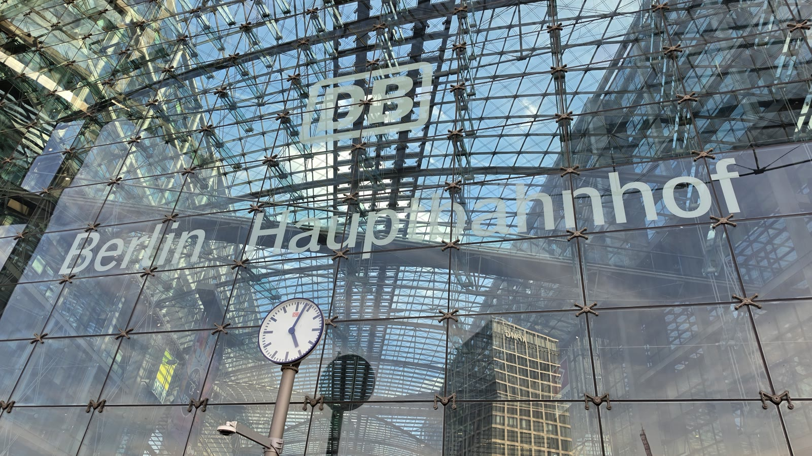<figcaption>오후 5시 3분 베를린 중앙역. 유리 지붕 아래로 시계가 보입니다.</figcaption></figure>
  <p>베를린과 라이프치히는 독일 철도(DB)의 ICE와 사설 철도인 플릭스트레인이 함께 다닙니다.</p>
  <figure>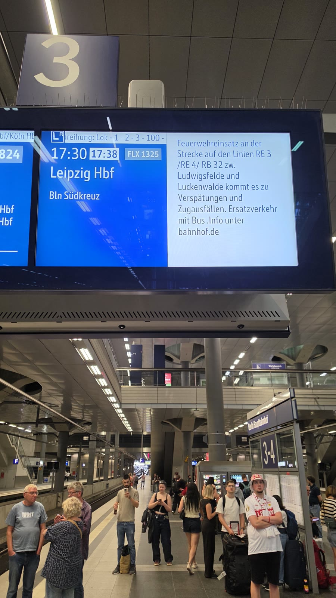<figcaption>오후 5시 20분 승강장 안내판. '17:30 → 17:38, FLX 1325, 라이프치히 중앙역, 베를린 쥐트크로이츠 경유'. 옆 칸에는 소방 출동으로 인한 지연·운휴·대체버스 안내가 떠 있습니다.</figcaption></figure>
  <p>제가 탄 건 플릭스트레인 FLX 1325였습니다. 정시 17시 30분 출발인데 8분 늦어 17시 38분에 떠났습니다.</p>
  <p>플릭스트레인 공식 안내로는 베를린에서 라이프치히까지 <b>최단 1시간 37분</b>, 편도 <b>5.98유로부터</b>입니다. 그런데 이날은 선로 사정으로 라이프치히 중앙역 도착이 밤 8시 20분이었습니다. <b>2시간 42분</b> 걸린 셈입니다.</p>
  <figure>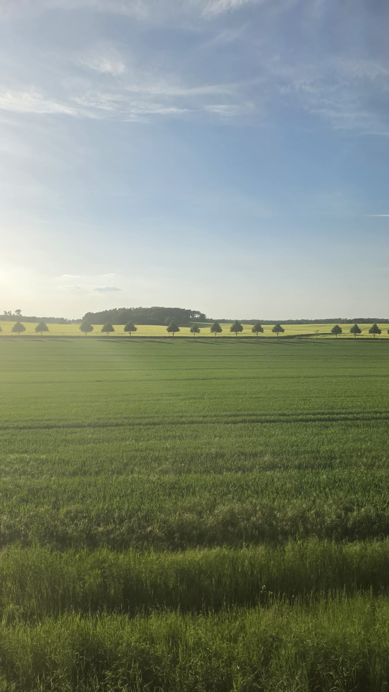<figcaption>오후 6시 55분 차창 밖. 밀밭과 노을. 여기가 브란덴부르크 남서쪽입니다.</figcaption></figure>
  <p>독일 기차는 제시간에 오지 않는 일이 흔합니다. 이날처럼 소방 출동이나 공사로 노선이 바뀌면 한 시간 이상 늘어납니다.</p>
  <ul class="checks">
    <li>환승이 끼어 있는 일정이라면 최소 30분, 국경을 넘는 구간이면 1시간 여유를 두세요</li>
    <li>저가 철도(플릭스트레인)는 좌석 지정제라 자리는 보장되지만 편수가 적습니다. 놓치면 다음 차가 한참 뒤입니다</li>
    <li>여러 도시를 이어 다닐 계획이면 구간권을 따로 사는 것보다 패스 계산이 유리할 때가 많습니다</li>
  </ul>
  <div style="text-align:center;margin:30px 0"><a href="https://affiliate.klook.com/redirect?aid=135164&aff_adid=1433460&k_site=https%3A%2F%2Fwww.klook.com%2Fko%2Factivity%2F9870-german-rail-interrail-pass%2F" target="_blank" rel="nofollow sponsored noopener" style="display:inline-block;padding:15px 28px;background:#E34948;color:#fff;font-weight:700;font-size:18px;text-decoration:none;border-radius:8px"><b>▶ 독일 레일패스 요금·조건 확인하기</b></a></div>
  <figure>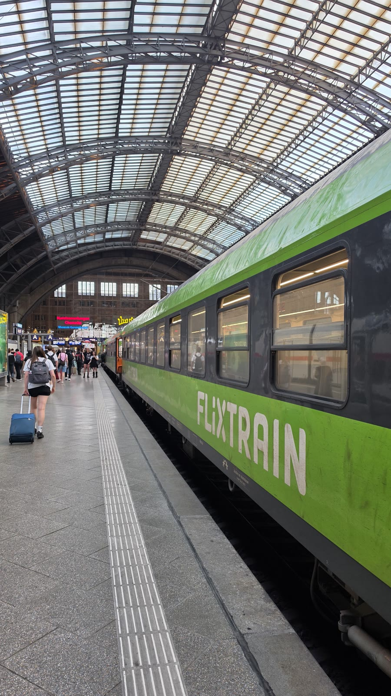<figcaption>밤 8시 20분, 라이프치히 중앙역에 내린 직후. 초록색 플릭스트레인이 서 있습니다.</figcaption></figure>
  <h2>라이프치히 중앙역 — 유럽에서 가장 큰 종착역</h2>
  <figure>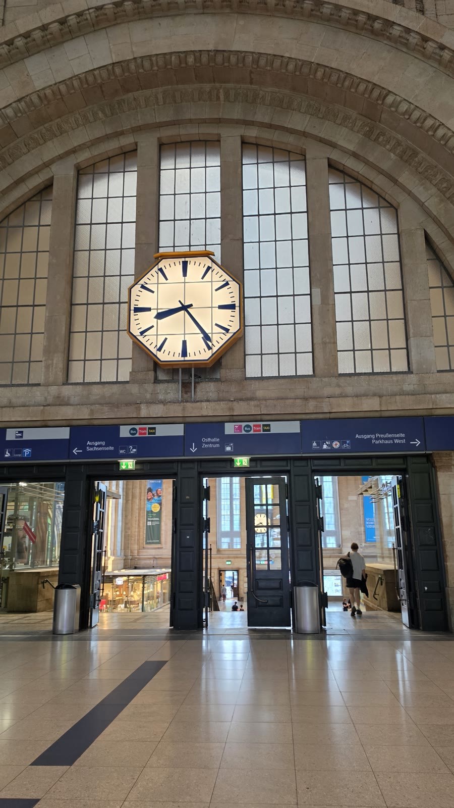<figcaption>밤 8시 22분 역 대합실. 아치 아래에 큰 시계가 걸려 있습니다.</figcaption></figure>
  <p>라이프치히 중앙역은 승강장 면적 기준으로 유럽에서 가장 큰 종착역입니다. 역 안이 그대로 쇼핑몰(Promenaden)이라 밤늦게까지 상점이 엽니다.</p>
  <figure>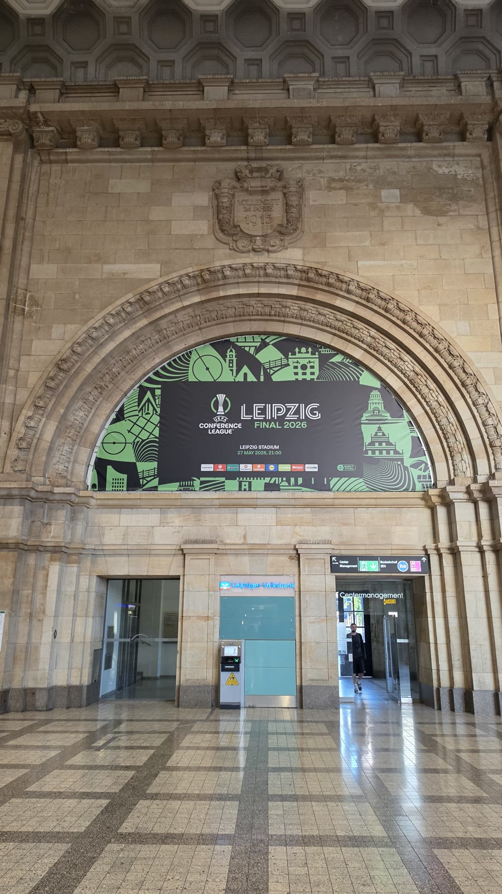<figcaption>밤 8시 23분 역 입구. 'LEIPZIG — 컨퍼런스리그 FINAL 2026' 배너가 걸려 있습니다.</figcaption></figure>
  <p>2026년 UEFA 컨퍼런스리그 결승이 나흘 뒤인 5월 27일 라이프치히 레드불 아레나에서 열릴 예정이었습니다. 도시 전체가 이미 결승 장식을 하고 있었습니다.</p>
  <figure>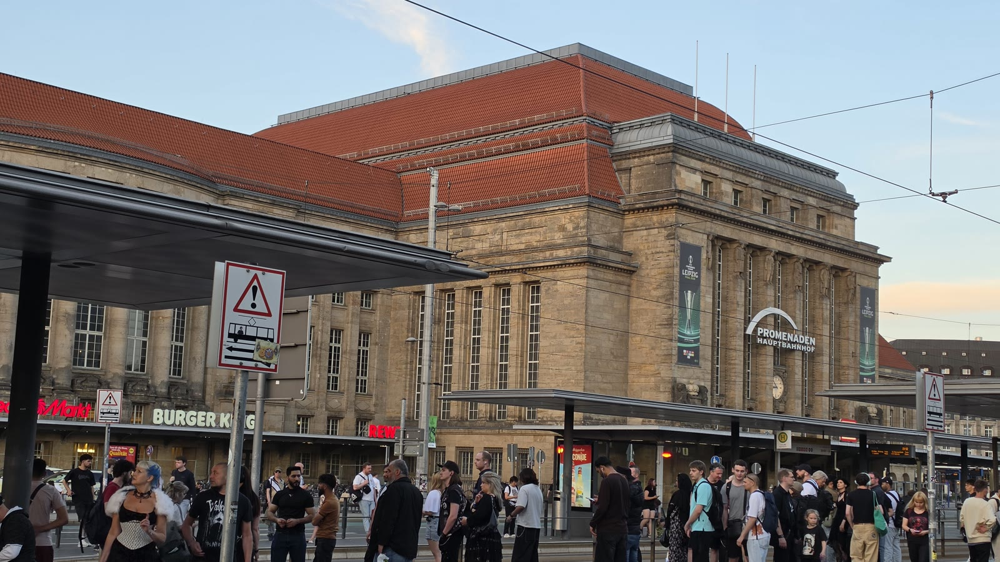<figcaption>밤 8시 52분 역 정면. 해가 아직 다 지지 않았습니다.</figcaption></figure>
  <h2>전승기념비 — 저녁 9시 반에 가야 하는 이유</h2>
  <figure>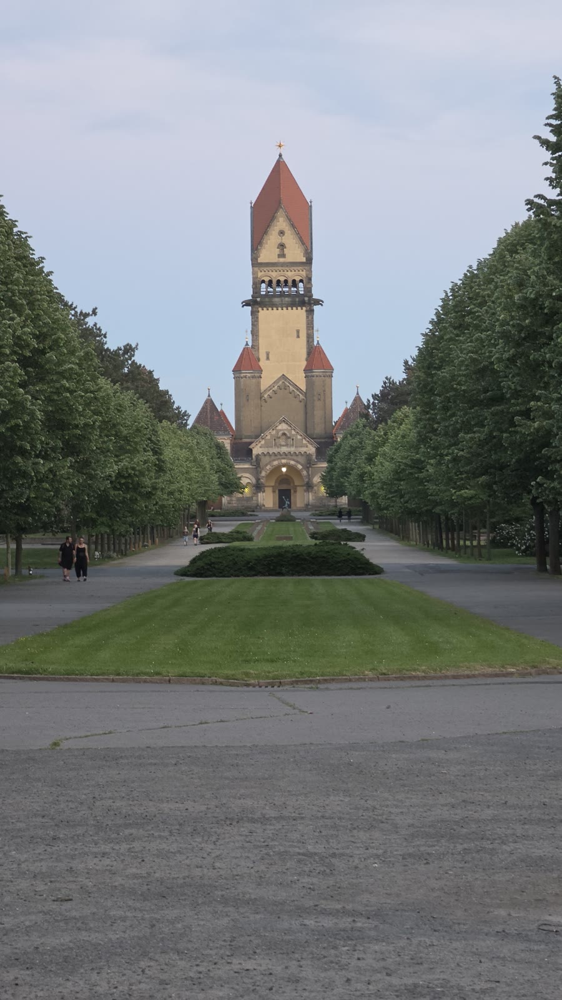<figcaption>밤 9시 18분. 남부묘지 쪽 가로수길. 이 길 끝에 전승기념비가 있습니다.</figcaption></figure>
  <p>정식 이름은 '민족들의 전투 기념비(Völkerschlachtdenkmal)'입니다. 1813년 나폴레옹 군대가 이곳에서 패한 라이프치히 전투를 기려 1913년에 세웠습니다. 높이 91m로 유럽에서 가장 큰 전쟁 기념물에 속합니다.</p>
  <figure>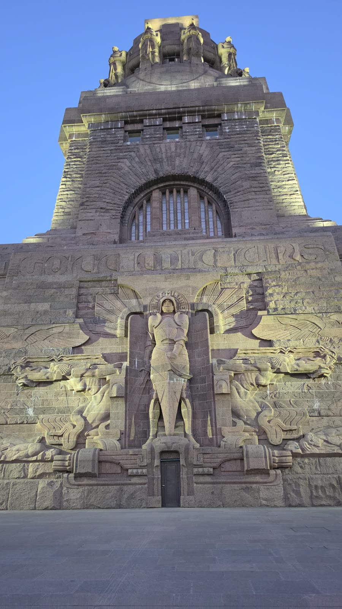<figcaption>밤 9시 31분. 해가 막 넘어간 직후, 앞 연못에 기념비가 그대로 비칩니다.</figcaption></figure>
  <p>내부 전망대는 4~10월 매일 10시~18시, 11~3월은 10시~16시에 엽니다. 성인 <b>12유로</b>, 할인 10유로, 6세 미만 무료입니다.</p>
  <p>저는 밤 9시 반에 도착해서 안에는 못 들어갔습니다. 그런데 <b>바깥에서 보는 게 목적이라면 저녁이 훨씬 낫습니다.</b> 야간 조명이 들어오면 돌 표면의 부조가 낮보다 선명하게 드러납니다.</p>
  <figure>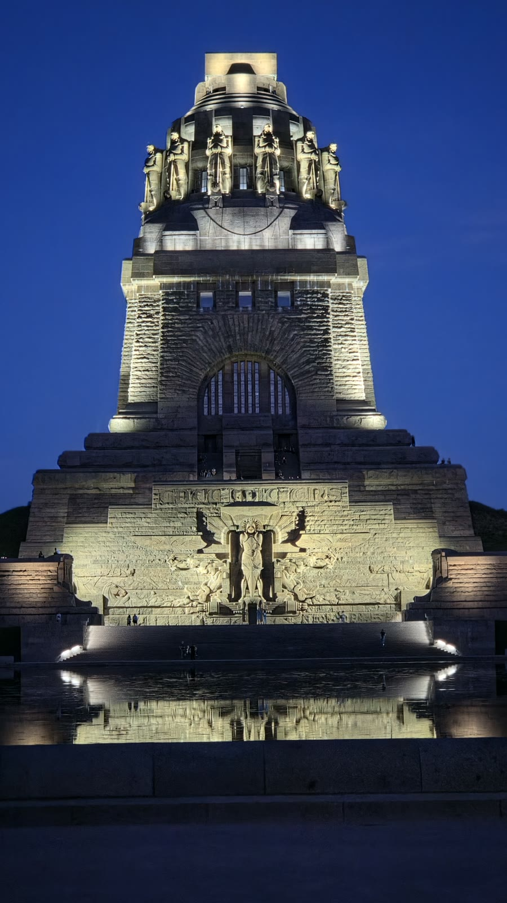<figcaption>밤 9시 56분. 조명이 들어온 뒤. 25분 사이에 완전히 다른 건물이 됐습니다.</figcaption></figure>
  <ul class="checks">
    <li>안까지 보려면 낮에 가고, 조명과 반영을 보려면 일몰 직후에 가세요</li>
    <li>5월 하순 라이프치히 일몰은 밤 9시 10분 전후입니다. 9시 20분쯤 도착하면 두 장면을 다 봅니다</li>
    <li>도심에서 트램으로 갑니다. 1구역(110) 1회권이 3.80유로, 1시간 유효입니다</li>
  </ul>
  <div class="note"><p>이날 25분 사이에 찍은 두 장이 이 글에서 가장 마음에 드는 사진입니다. 같은 자리에서 해가 지기를 기다린 값입니다.</p></div>
  <h2>새벽 1시간 46분 — 사람 없는 라이프치히 구시가지</h2>
  <p>다음 날 첫 사진이 오전 6시 48분, 역으로 돌아온 게 8시 12분입니다. 그 사이 <b>1시간 46분</b>에 라이프치히 도심 핵심을 다 봤습니다.</p>
  <figure>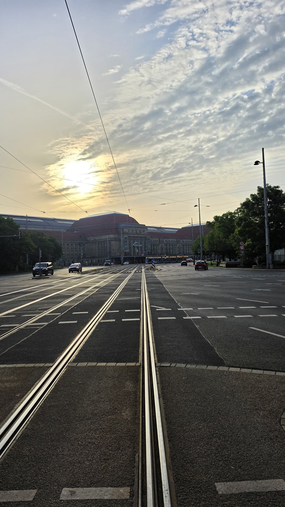<figcaption>오전 6시 49분. 트램 선로 위로 해가 올라옵니다. 차도 사람도 없습니다.</figcaption></figure>
  <figure>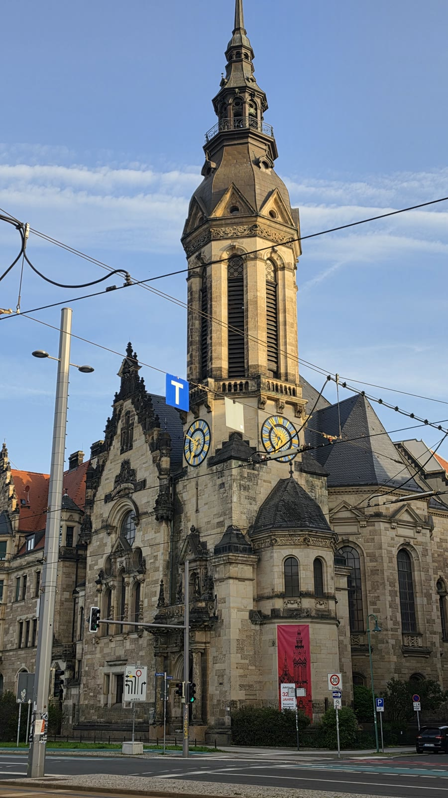<figcaption>오전 6시 53분 개혁교회. 아침 햇빛이 첨탑 한쪽 면에만 닿아 있습니다.</figcaption></figure>
  <p>독일 도시의 새벽은 정말로 비어 있습니다. 관광객도, 출근 인파도 아직 없습니다. 같은 광장을 낮에 찍으면 사람이 화면의 절반입니다.</p>
  <figure>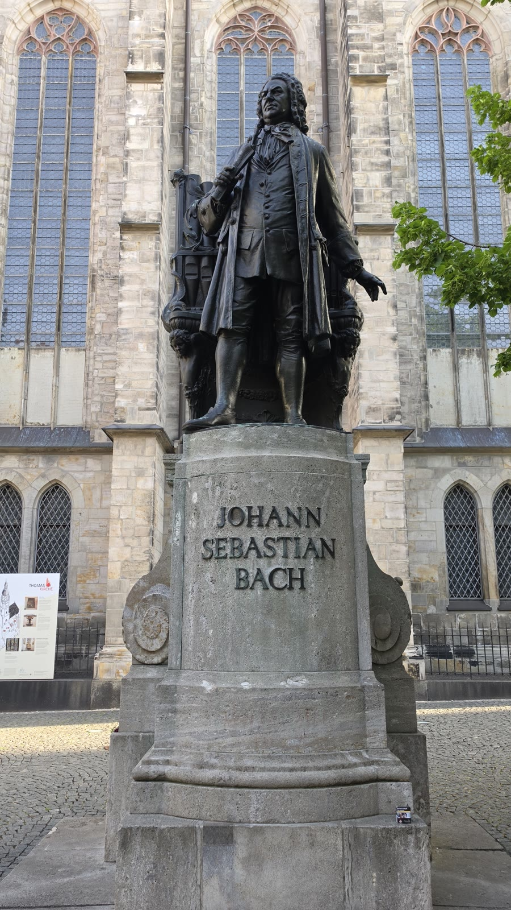<figcaption>오전 7시 12분 토마스교회 앞 요한 제바스티안 바흐 동상. 아무도 없습니다.</figcaption></figure>
  <p>바흐는 1723년부터 1750년 죽을 때까지 27년간 토마스교회의 음악감독(칸토어)이었습니다. 유해도 이 교회 안에 있습니다.</p>
  <p><b>토마스교회는 입장료가 없습니다.</b> 월~토 10시~18시, 일요일 11시~18시에 엽니다. 다만 새벽에는 당연히 닫혀 있어서 저는 바깥만 봤습니다. 안에 들어가려면 낮 일정이 필요합니다.</p>
  <p>모테트(성가 공연)를 보려면 1인 3유로짜리 입장 프로그램이 필요하고, 어린이·학생·라이프치히 패스 소지자는 무료입니다.</p>
  <figure>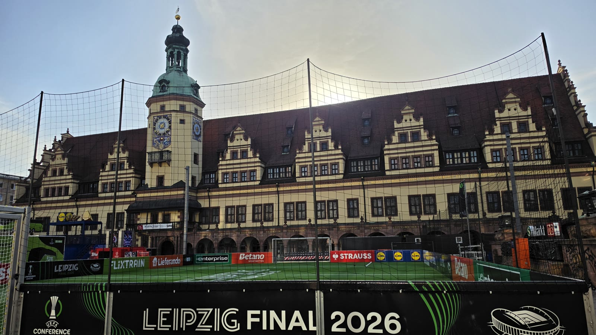<figcaption>오전 7시 21분 마르크트 광장. 르네상스 양식 구시청사 앞에 미니 축구장이 깔려 있습니다. 광고판에 'LEIPZIG FINAL 2026'.</figcaption></figure>
  <p>구시청사는 1556년에 지은 건물입니다. 그 앞에 컨퍼런스리그 결승 팬존이 설치돼 있었습니다. 새벽이라 아무도 없어서 구조가 그대로 보였습니다.</p>
  <figure>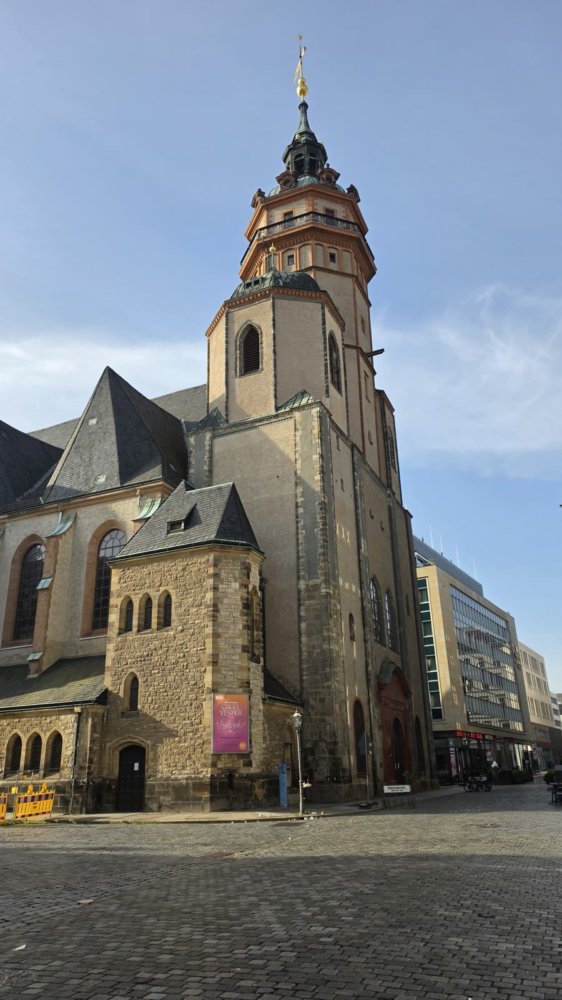<figcaption>오전 7시 37분 니콜라이교회.</figcaption></figure>
  <p>이 교회가 1989년 동독 월요 시위의 출발점입니다. 매주 월요일 평화 기도회가 열렸고, 거기서 나온 사람들이 거리로 나가면서 시위가 커졌습니다. 그해 11월 베를린 장벽이 무너졌습니다.</p>
  <p>니콜라이교회는 월~금 11시~18시, 토요일 11시~16시, 일요일 11시 30분~14시 30분에 열립니다. 예배·연주회 중에는 관람이 안 됩니다.</p>
  <h2>남들이 잘 안 쓰는 이야기 — 라이프치히는 '낮'을 쓰지 않아도 됩니다</h2>
  <p>여행 일정표는 보통 오전 9시에서 오후 6시 사이로 짭니다. 그런데 이날 제가 라이프치히에서 관광에 쓴 시간은 그 바깥에 다 있습니다.</p>
  <ul class="checks">
    <li>저녁 9시 18분~9시 56분 — 전승기념비 (38분)</li>
    <li>새벽 6시 48분~8시 12분 — 도심 한 바퀴 (1시간 24분)</li>
    <li>낮 시간 사용 — 0분</li>
  </ul>
  <p>이게 가능한 이유는 두 가지입니다. 첫째, 라이프치히 도심 핵심이 반경 1km 안에 모여 있습니다. 둘째, 5월 독일은 해가 밤 9시 넘어 지고 새벽 5시 전에 뜹니다.</p>
  <div class="note"><p>작은 도시일수록 '몇 시간이 필요한가'보다 '어느 시간대를 쓰는가'가 결과를 바꿉니다.</p></div>
  <p>대신 대가가 있습니다. 교회 내부, 전승기념비 전망대, 박물관은 전부 못 봅니다. 저는 바흐의 무덤도, 니콜라이교회 안도 못 봤습니다.</p>
  <p>그러니 이렇게 정리됩니다. <b>건물 안을 보고 싶으면 낮에 하루, 도시의 인상을 보고 싶으면 저녁과 새벽으로 12시간.</b> 둘 다 원하면 이틀입니다.</p>
  <h2>라이프치히에서 프라하 — 엘베강을 따라 국경을 넘습니다</h2>
  <figure>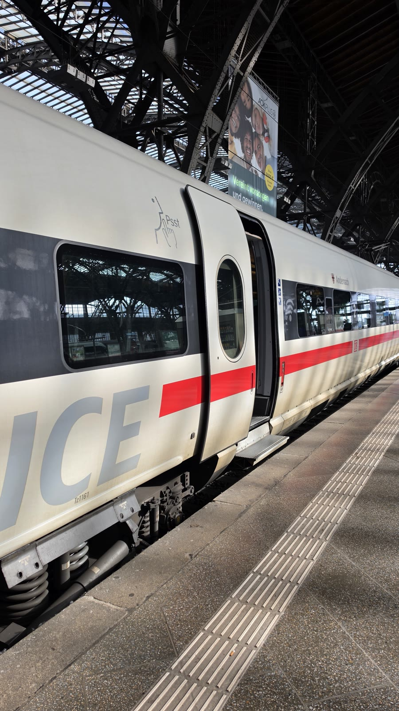<figcaption>오전 8시 34분 라이프치히 중앙역. ICE가 들어와 있습니다.</figcaption></figure>
  <p>라이프치히에서 프라하까지는 직통 EC·IC가 다니고 <b>최단 3시간 26분</b>입니다. 저는 직통이 아니라 드레스덴을 지나 지역열차로 갈아타며 갔습니다.</p>
  <figure>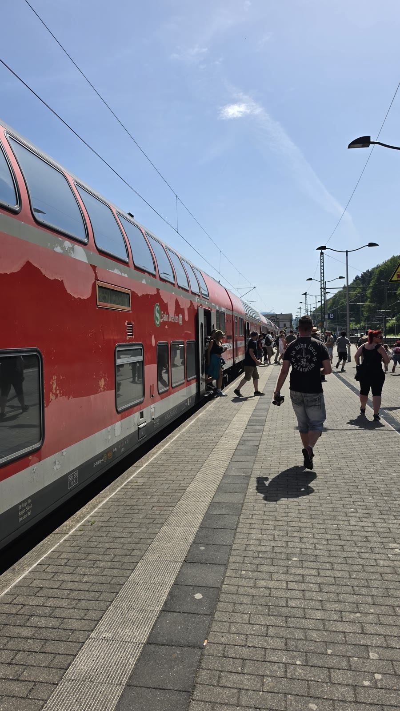<figcaption>오전 10시 56분 바트샨다우. 빨간 2층 지역열차가 서 있습니다. 여기가 독일 쪽 마지막 큰 역입니다.</figcaption></figure>
  <p>드레스덴에서 바트샨다우까지는 엘베강을 따라 달립니다. 강 양쪽으로 사암 절벽이 솟은 구간인데, 이 일대가 작센 스위스 국립공원입니다. 창밖만 봐도 아깝지 않은 구간입니다.</p>
  <p>바트샨다우를 지나면 바로 체코입니다. 국경 검문은 따로 없고, 오전 11시 30분에 데친(Děčín)에 있었습니다. 차내 안내가 '계획 11:25, 실제 11:30'이었습니다.</p>
  <figure>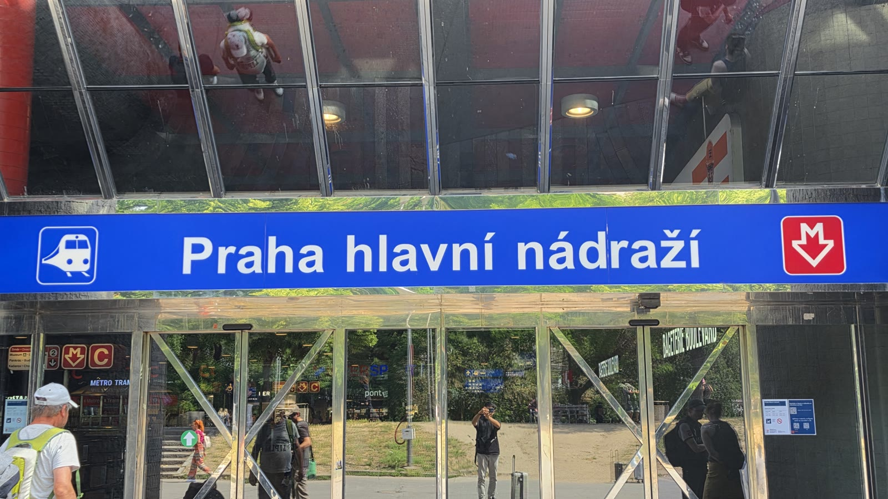<figcaption>오후 1시 28분 프라하 중앙역(Praha hlavní nádraží) 입구. 라이프치히에서 4시간 54분 걸렸습니다.</figcaption></figure>
  <p>직통보다 1시간 반 가까이 더 걸렸습니다. 대신 엘베강 구간을 창가에서 봤고, 도중에 내리려면 내릴 수도 있었습니다. 어느 쪽이 나은지는 목적에 따라 갈립니다.</p>
  <ul class="checks">
    <li>빨리 가려면 — 라이프치히→프라하 직통 EC·IC, 3시간 26분부터</li>
    <li>풍경을 보려면 — 드레스덴에서 엘베강 지역열차로 갈아타는 경로, 약 5시간</li>
    <li>작센 스위스에 들를 거면 — 바트샨다우에서 내려 하루를 쓰고 다음 날 프라하로 가는 방법도 있습니다</li>
  </ul>
  <p>국경을 넘으면 통신사가 바뀝니다. 유럽 로밍은 EU 안에서 대체로 그대로 쓰이지만, 데이터 요금제를 미리 정리해 두면 국경 구간에서 신경 쓸 일이 줄어듭니다.</p>
  <div style="text-align:center;margin:30px 0"><a href="https://affiliate.klook.com/redirect?aid=135164&aff_adid=1433461&k_site=https%3A%2F%2Fwww.klook.com%2Fko%2Factivity%2F204745-5g-esim-germany-o2%2F" target="_blank" rel="nofollow sponsored noopener" style="display:inline-block;padding:15px 28px;background:#E34948;color:#fff;font-weight:700;font-size:18px;text-decoration:none;border-radius:8px"><b>▶ 독일·유럽 eSIM 요금제 보기</b></a></div>
  <h2>라이프치히 1박에 드는 돈 (공개 요금 기준)</h2>
  <p>아래는 공개된 요금이고 제 개인 지출이 아닙니다. 사진으로 확인되지 않는 항목은 넣지 않았습니다.</p>
  <ul class="checks">
    <li>베를린→라이프치히 플릭스트레인 편도 — 5.98유로부터 (공식 안내)</li>
    <li>라이프치히 시내 1회권(110구역) — 3.80유로, 1시간 유효</li>
    <li>전승기념비 입장 — 성인 12유로, 할인 10유로</li>
    <li>토마스교회·니콜라이교회 — 무료</li>
    <li>라이프치히→프라하 직통 — 16유로부터 (예매 시점에 따라 크게 다름)</li>
  </ul>
  <p>전승기념비까지 넣어도 하루 교통·입장료가 약 40,800원 안쪽에서 끝납니다. 숙박비가 전체 예산을 좌우합니다.</p>
  <p>베를린-라이프치히 2시간 42분, 라이프치히-프라하 4시간 54분. 이틀 동안 기차 안에서만 일곱 시간 반을 보냈습니다. 좌석이 좁지는 않았지만 목 받침이 없는 좌석이 많습니다.</p>
  <h2>자주 묻는 질문</h2>
  <p><b>베를린에서 라이프치히까지 기차로 얼마나 걸리나요?</b></p>
  <p>플릭스트레인 공식 안내로 최단 1시간 37분, 편도 5.98유로부터입니다. 다만 저는 선로 사정으로 2시간 42분 걸렸습니다. 여유를 두세요.</p>
  <p><b>라이프치히는 당일치기가 가능한가요?</b></p>
  <p>도심 핵심은 걸어서 한두 시간이면 돕니다. 다만 전승기념비 야간 조명과 새벽 구시가지는 당일치기로는 못 봅니다. 하루 묵으면 저녁과 새벽이 통째로 생깁니다.</p>
  <p><b>전승기념비는 몇 시에 가는 게 좋나요?</b></p>
  <p>안에 들어갈 거면 4~10월 10시~18시 사이입니다. 바깥 사진이 목적이면 일몰 직후가 가장 좋습니다. 5월 하순 기준 밤 9시 20분쯤 도착하면 해 질 녘과 조명을 다 봅니다.</p>
  <p><b>토마스교회 바흐 무덤은 볼 수 있나요?</b></p>
  <p>교회 안에 있고 입장료는 없습니다. 월~토 10시~18시, 일요일 11시~18시입니다. 저는 새벽에 갔기 때문에 바깥 동상만 봤습니다.</p>
  <p><b>라이프치히에서 프라하까지 어떻게 가나요?</b></p>
  <p>직통 EC·IC가 최단 3시간 26분입니다. 드레스덴을 거쳐 엘베강 지역열차로 가면 5시간 정도 걸리는 대신 작센 스위스 구간 풍경을 봅니다.</p>
  <h2>정리하면</h2>
  <p>라이프치히에 12시간 14분 있었고, 그중 낮은 한 시간도 쓰지 않았습니다. 저녁에 전승기념비, 새벽에 구시가지. 이 두 조각으로 도시의 인상은 충분히 잡힙니다.</p>
  <p>대신 교회 안과 전망대는 포기해야 합니다. 그것까지 보려면 낮 하루가 따로 필요합니다.</p>
  <p>독일 기차는 늦습니다. 이날도 8분 지연으로 출발해 한 시간 넘게 밀렸습니다. 국경을 넘는 날일수록 여유를 크게 두세요.</p>
  <div style="text-align:center;margin:30px 0"><a href="https://danielmoon82.github.io/moon/posts/berlin-first-evening-course-2026-09-16.html" target="_blank" rel="nofollow sponsored noopener" style="display:inline-block;padding:15px 28px;background:#E34948;color:#fff;font-weight:700;font-size:18px;text-decoration:none;border-radius:8px"><b>▶ 베를린 도착 첫날 저녁 코스 보기</b></a></div>
  <div style="text-align:center;margin:30px 0"><a href="https://danielmoon82.github.io/moon/posts/berlin-walking-day-course-2026-09-16.html" target="_blank" rel="nofollow sponsored noopener" style="display:inline-block;padding:15px 28px;background:#E34948;color:#fff;font-weight:700;font-size:18px;text-decoration:none;border-radius:8px"><b>▶ 베를린 도보 하루 코스 보기</b></a></div>
  <p style="font-size:12px;color:#999;line-height:1.6;margin-top:36px">방문 날짜와 시각은 2026년 5월 22~24일 여행 중 찍은 사진의 촬영 시각(중부유럽 현지 시각)으로 확인했습니다. 요금·운영 시간은 2026년 9월 16일에 확인한 공개 정보이며 바뀔 수 있습니다. 방문 전 공식 홈페이지에서 다시 확인하세요. 원화 환산은 1유로 1,632원 기준의 대략치입니다. 식사·숙소·개인 지출은 사진으로 확인되지 않아 적지 않았습니다. 전승기념비 요금·운영 시간은 라이프치히 전승기념비 재단, 교회 운영 시간은 토마스교회·니콜라이교회 공식 홈페이지, 라이프치히 교통요금은 MDV, 기차 소요 시간과 요금은 플릭스트레인 공식 노선 안내와 열차 예매 사이트 표시값을 참고했습니다. 2026년 UEFA 컨퍼런스리그 결승 일정과 장소는 공개된 대회 기록으로 확인했습니다. 일몰 시각은 천문 계산값입니다.</p>
</main>

<footer class="foot">
  <div class="wrap"><p>나의 투자 그리고 행복한 여행 · 투자 판단의 참고 자료일 뿐, 매수·매도를 권유하지 않습니다.</p></div>
</footer>
